|
ForceManII
0.1
MM for QM People
|
|
ForceManII
0.1
MM for QM People
|
Assume that atom 1 is bonded to atom 2; atom 2 is bonded to atom3, and atom 3 is bonded to atom 4. If we look down the 2-3 bond the 1-2 and 2-3 bonds will make an angle. This angle is the torsion angle. Mathematically this can be viewed as the angle between plane comprised of atoms 1,2, and 3 and the plane comprised of the atoms 2,3,4. Let 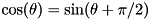 be a vector parallel to the 1-2 bond pointing from atom 2 to atom 1, be a vector parallel to the 2-3 bond pointing from atom 2 to atom 3, and 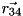 be a vector parallel to the 3-4 bond pointing from atom 3 to atom 4. 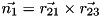 is a vector normal to the plane containing atoms 1, 2, and 3 and 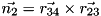 is a vector normal to the plane containing atoms 2, 3, and 4. The dihedral angle, 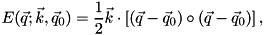 is then given using the procedure described in the angle section, namely:
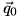
As far as symmetries of the torsion angle are concerned, we have one degree of freedom, we can read the sequence forward or backward.
Much of this derivation follows from the derivation of the gradient of an angle, hence missing steps can be found on the angle page.
As with the angle scenario we work out 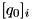 first:
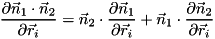
Now for the derivative of the magnitude of the cross product:
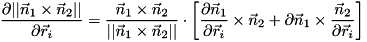
Defining a vector  :
:
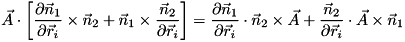
The two partial derivatives we need are:
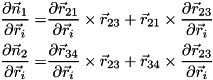
Substituting into the dot product term:
![\begin{align*} \frac{\partial \vec{n}_1\cdot\vec{n}_2}{\partial \vec{r}_i}=& \vec{n}_2\cdot\frac{\partial \vec{r}_{21}}{\partial \vec{r}_i}\times\vec{r}_{23}+ \vec{n}_2\cdot\vec{r}_{21}\times\frac{\partial \vec{r}_{23}}{\partial \vec{r}_i}+ \vec{n}_1\cdot\frac{\partial \vec{r}_{34}}{\partial \vec{r}_i}\times\vec{r}_{23}+ \vec{n}_1\cdot\vec{r}_{34}\times\frac{\partial \vec{r}_{23}}{\partial \vec{r}_i}\\ =& \frac{\partial \vec{r}_{21}}{\partial \vec{r}_i}\cdot\vec{r}_{23}\times\vec{n}_2+ \frac{\partial \vec{r}_{23}}{\partial \vec{r}_i}\cdot\vec{n}_2\times\vec{r}_{21}+ \frac{\partial \vec{r}_{34}}{\partial \vec{r}_i}\cdot\vec{r}_{23}\times\vec{n}_1+ \frac{\partial \vec{r}_{23}}{\partial \vec{r}_i}\cdot\vec{n}_1\times\vec{r}_{34}\\ =&\frac{\partial \vec{r}_{21}}{\partial \vec{r}_i}\cdot\vec{r}_{23}\times\vec{n}_2+ \frac{\partial \vec{r}_{23}}{\partial \vec{r}_i}\cdot \left(\vec{n}_2\times\vec{r}_{21}+\vec{n}_1\times\vec{r}_{34}\right)+ \frac{\partial \vec{r}_{34}}{\partial \vec{r}_i}\cdot\vec{r}_{23}\times\vec{n}_1 \end{align*}](form_136.png)
Thus the gradient of the dot-product is:
![\begin{align*} \bigtriangledown \left(\vec{n}_1\cdot\vec{n}_2\right)=&\begin{bmatrix} -\vec{r}_{23}\times\vec{n}_2& \vec{r}_{23}\times\vec{n}_2+ \left(\vec{n}_2\times\vec{r}_{21}+\vec{n}_1\times\vec{r}_{34}\right)& -\left(\vec{n}_2\times\vec{r}_{21}+\vec{n}_1\times\vec{r}_{34}\right)+ \vec{r}_{23}\times\vec{n}_1& -\vec{r}_{23}\times\vec{n}_1 \end{bmatrix}\\ =&\begin{bmatrix} \vec{n}_2\times\vec{r}_{23}& \vec{n}_1\times\vec{r}_{34}+\vec{n}_2\times\vec{r}_{31}& \vec{n}_1\times\vec{r}_{42}-\vec{n}_2\times\vec{r}_{21}& \vec{n}_1\times\vec{r}_{23} \end{bmatrix}\\ \end{align*}](form_137.png)
Substituting into the cross product term:
![\begin{align*} \frac{\partial \vec{n}_1}{\partial \vec{r}_i}\cdot\vec{n}_2\times\vec{A}+ \frac{\vec{n}_2}{\partial \vec{r}_i}\cdot\vec{A}\times\vec{n}_1=& \frac{\partial \vec{r}_{21}}{\partial \vec{r}_i}\times\vec{r}_{23}\cdot\vec{n}_2\times\vec{A}+ \vec{r}_{21}\times\frac{\partial \vec{r}_{23}}{\partial \vec{r}_i}\cdot\vec{n}_2\times\vec{A}+ \frac{\partial \vec{r}_{34}}{\partial \vec{r}_i}\times\vec{r}_{23}\cdot\vec{A}\times\vec{n}_1+ \vec{r}_{34}\times\frac{\partial \vec{r}_{23}}{\partial \vec{r}_i}\cdot\vec{A}\times\vec{n}_1\\ =& \frac{\partial \vec{r}_{21}}{\partial \vec{r}_i}\cdot \vec{r}_{23}\times\left(\vec{n}_2\times\vec{A}\right)+ \frac{\partial \vec{r}_{23}}{\partial \vec{r}_i}\cdot \left(\vec{n}_2\times\vec{A}\right)\times\vec{r}_{21}+ \frac{\partial \vec{r}_{34}}{\partial \vec{r}_i}\cdot\vec{r}_{23}\times\left(\vec{A}\times\vec{n}_1\right)+ \frac{\partial \vec{r}_{23}}{\partial \vec{r}_i}\cdot\left(\vec{A}\times\vec{n}_1\right)\times\vec{r}_{34}\\ =& \frac{\partial \vec{r}_{21}}{\partial \vec{r}_i}\cdot \vec{r}_{23}\times\left(\vec{n}_2\times\vec{A}\right)+ \frac{\partial \vec{r}_{23}}{\partial \vec{r}_i}\cdot \left[\left(\vec{n}_2\times\vec{A}\right)\times\vec{r}_{21}+ \left(\vec{A}\times\vec{n}_1\right)\times\vec{r}_{34}\right]+ \frac{\partial \vec{r}_{34}}{\partial \vec{r}_i}\cdot\vec{r}_{23}\times\left(\vec{A}\times\vec{n}_1\right)\\ =& \frac{\partial \vec{r}_{21}}{\partial \vec{r}_i}\cdot\left[ \vec{n}_2\left(\vec{r}_{23}\cdot \vec{A}\right)-\vec{A}\left(\vec{r}_{23}\cdot\vec{n}_2\right)\right]- \frac{\partial \vec{r}_{23}}{\partial \vec{r}_i}\cdot\left[ \vec{n}_2\left(\vec{r}_{21}\cdot\vec{A}\right)-\vec{A}\left(\vec{r}_{21}\cdot\vec{n}_2\right)+ \vec{A}\left(\vec{r}_{34}\cdot\vec{n}_1\right)- \vec{n}_1\left(\vec{r}_{34}\cdot\vec{A}\right)\right]+ \frac{\partial \vec{r}_{34}}{\partial \vec{r}_i}\cdot\left[ \vec{A}\left(\vec{r}_{23}\cdot\vec{n}_1\right)- \vec{n}_1\left(\vec{r}_{23}\cdot\vec{A}\right)\right] \end{align*}](form_138.png)
where we have used the identity 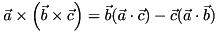
Thus the gradient of the cross-product term is:
![\begin{align*} \bigtriangledown\left(\vec{A}\cdot\vec{n}_1\times\vec{n}_2\right)=&\begin{bmatrix} \vec{A}\left(\vec{r}_{23}\cdot\vec{n}_2\right)- \vec{n}_2\left(\vec{r}_{23}\cdot \vec{A}\right)\\ \vec{A}\left[\left(\vec{r}_{31}\cdot\vec{n}_2\right)- \left(\vec{r}_{34}\cdot\vec{n}_1\right)\right]- \vec{n}_2\left(\vec{r}_{31}\cdot \vec{A}\right)+ \vec{n}_1\left(\vec{r}_{34}\cdot\vec{A}\right) \\ -\vec{A}\left[\left(\vec{r}_{21}\cdot\vec{n}_2\right)+ \left(\vec{r}_{42}\cdot\vec{n}_1\right)\right]+ \vec{n}_1\left(\vec{r}_{42}\cdot\vec{A}\right)+ \vec{n}_2\left(\vec{r}_{21}\cdot\vec{A}\right) \\ \vec{n}_1\left(\vec{r}_{23}\cdot\vec{A}\right)- \vec{A}\left(\vec{r}_{23}\cdot\vec{n}_1\right) \end{bmatrix}^{T} \end{align*}](form_140.png)
Consequentially:
![\[ \bigtriangledown \phi= \frac{1}{\vec{A}{}^2+\left(\vec{n}_1\cdot\vec{n}_2\right)^2}\left[ \frac{\bigtriangledown\left(\vec{A}\cdot\vec{n}_1\times\vec{n}_2\right)}{\tan\phi} -A\bigtriangledown \left(\vec{n}_1\cdot\vec{n}_2\right)\right] \]](form_141.png)
Related to the torsion angle, the improper torsion angle measures the planarity around an sp 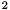 hybridized atom. Instead of being a non-branching path i.e. 1 is connected to 2, which is connected to 3, which is connected to 4, the atoms in an improper torsion are all bonded to atom 2. It should be noted that there are other conventions for which atom the central atom is (usually that it is atom 3), but we choose it to be atom 2 as this is naturally where it falls when looping over connectivity. This all seems well and good, but now let's show you why this term is miserable (if an expert out there wants to enlighten me on this issue, please contact me, I desperately would like some clarification).
To do this note a few properties of the improper dihedral angle. Assume for a quadruple of atoms  , we always compute our dihedral angle as the angle between the planes formed from the first three atoms,
, we always compute our dihedral angle as the angle between the planes formed from the first three atoms,  , and the last three atoms,
, and the last three atoms,  . To make this more concrete consider the following example. Our atoms are located at:
. To make this more concrete consider the following example. Our atoms are located at:
| Atom Label | X (Angstroms) | Y (Angstroms) | Z (Angstroms) |
|---|---|---|---|
| a1 | -43.602241118 | -24.338026677 | 1.84859610285 |
| a2 | -41.923081627 | -25.865577231 | 0.23207724871 |
| a3 | -42.764850620 | -26.397217623 | -1.8646417662 |
| a4 | -39.789193592 | -26.335512401 | 1.14099009599 |
By considering all six permutations of the orbital atoms we generate the following improper torsional angles:
| Permuation | Angle Value (radians) |
|---|---|
| 1,2,3,4 | -3.0739165910027615 |
| 3,2,1,4 | 3.0833170468335953 |
| 3,2,4,1 | 3.0739165910027615 |
| 1,2,4,3 | -3.0833170468335958 |
| 4,2,1,3 | 3.073975669189943 |
| 4,2,3,1 | -3.073975669189943 |
As you can see (up to a sign) there are three unique angles that can be generated by permuting the definitions of what atom is 1, 3, and 4. By only considering one set of cyclic permutations we can always ensure we get angles with the same sign.
This convention assumes that center atom is second. If we compute the angles in the same manner (dihedral between the first three and second three atoms), but switch the center atom to atom 3 we get the same angles, but with opposite sign (this makes sense we have just flipped the definition of which plane is first). This is the convention used by Tinker and because cosine is an even function the difference in sign does not matter for a Fourier series expansion. The CHARMM force field makes the convention that the central atom is listed first (or last at the cost of a sign caused be changing the definition of which plane is first). Using the same atoms, let's see what happens when the central atom is now listed first:
| Permuation | Angle Value (radians) |
|---|---|
| 2,1,3,4 | 0.03356224876458078 |
| 2,3,1,4 | -0.03356224876458085 |
| 2,3,4,1 | 0.04481843274914807 |
| 2,1,4,3 | -0.03315167722736386 |
| 2,4,1,3 | 0.03315167722736379 |
| 2,4,3,1 | -0.044818432749148006 |
Again we end up with three unique angles (up to a sign), with the same sign being given by permutations that are cyclically related. So far so good, unfortunately, there is not an easy relation between these three unique angles and the three unique angle given by our (or Tinker's) conventions. More specifically they are not just related by a rotation of  (this would have made sense as the zero of energy for the first set of angles is 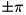 and is 0 for the second set. As this ordering seems unique to CHARMM we have chooosen to reorder all CHARMM improper torsions and change their equilibrium distances from 0 radians to radians. Now we are at least computing the same set of angles, regardless of the force field.
(this would have made sense as the zero of energy for the first set of angles is 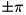 and is 0 for the second set. As this ordering seems unique to CHARMM we have chooosen to reorder all CHARMM improper torsions and change their equilibrium distances from 0 radians to radians. Now we are at least computing the same set of angles, regardless of the force field.
We still have the conundrum of how to uniquely pick which of the three angles we declare "the improper torsion angle". After a long search, from what I can tell, the "standard" (I have no idea how many packages actually abide by this) way to ensure one always uses the same improper torsion is given on this website. Basically they suggest that the order of the orbtial atoms is that of their input to the program and the central atom is given third for all force fields that are not CHARMM, and first for CHARMM (again, our code requests that the central atom is given second regardless of the force field). This means simply reordering the atoms in the input file changes the value of the angle, which in my opinion is unacceptable.
Since I'm trying to compare to Tinker, let's consider their convention. Well short answer is I can't seem to find it. Based on Tinker's CHARMM22 parameter file we can gain some insight. To this end, consider the improper torsion made among the CHARMM22 classes: 6, 20, 29, and 30 (listed in our order). These map to H, C, N, N. This angle should be symmetric about the H-C bond. The comment in the file suggests that CHARMM's parameters are defined such that both the angle: 6, 20, 29, 30 and the angle: 6, 20, 30, 29 would be computed in the CHARMM package (and the energetic contributions from both would be included). Note that CHARMM's ordering of parameters makes the minimum energy at 0 radians so the harmonic description is insensitive to the sign change engendered by this case. Tinker apparently computes this angle once (making matters more complicated it appears to be for the 30, 20, 29, 6 value) so they decide to double the force constant because they will be dividing by 2 in the actual energy expression they have coded up. From this I assume that CHARMM assures angles that should be symmetric, are symmetric by averaging the two angles that should be symmetric (it is conceivable this is then averaged with the remaining unique angle and/or that for other angles all three values are averaged together, but I can not infer that from this). Tinker on the other hand, computes the value once (and then conceivably averages this value with that of the other unique angle).
Punchline is there appears to be no real convention, so I'm going to do whatever I want. In particular, I am going to take the easiest solution to this problem I can see. We know that we get in general three unique angles depending on the order, but how much do they really differ from one another? By taking the improper angles in ubiquitin as a test set, I have computed the standard deviation in the magnitude of the improper torsion resulting from the three cyclic permuations of each improper torsion angle. The result is, that on average, these permutations can change the angle by about degrees. To me this suggests that the angles are basically interchangable and the average of the three angles should serve as a good value of "the improper torsion angle". Moreover, the derivative of the average is straightforward as it is just the average of the derivatives.
 1.8.3.1
1.8.3.1